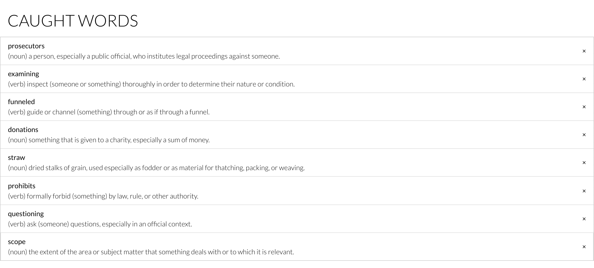

WordCatcher Chrome Extension
Monday August 6, 2018
HTML
CSS
Chrome Extension
JavaScript

This is a project I created alongside my students in the Girl Who Code Summer Immersion Program. My students had the idea for a Chrome Extension dictionary with the ability to save words
so that users could refer back to their saved words later. This was the first time I have had to
teach myself a technology I had not learned before in school. Although we ended up not publishing the project,
we had a great time working on it, and all learned a lot about web development. Link to repository.